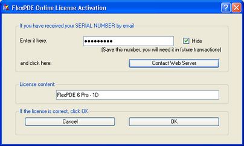
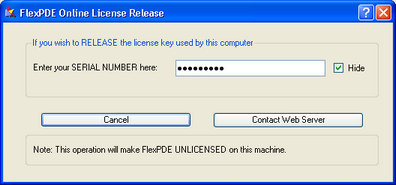

|
Internet Key Registration |

  
|
|
Internet Key Registration |
|
Activation
Enter your serial number into text field and click "Contact Web Server". If successful, the license contents will be displayed. If not, FlexPDE will report an error. Click "OK" to finish the registration. (If this activation is performed in public places, you can choose to "Hide" the Serial Number.)

Deactivation
Enter your serial number into the text field and click "Contact Web Server". If successful, FlexPDE will release the license on the local machine. If not, it will report an error.

Initially, the license must be deactivated from the same machine that is currently activate. However, in an attempt to make switching the license between two machines more convenient, FlexPDE will allow deactivation of the license from either of the last two machines that have been successfully registered.
Notes :
A computer's identification is constructed in part from it's MAC address and the operating system's report of a unique identifier for that installation. Sometimes the MAC address can change (usually on laptops connecting to different networks or when connected by Wi-Fi instead of a wired connection). If this happens after the machine is licensed, FlexPDE will issue an error telling the user that the license authorizes a different computer. When that happens, the user can simply release and reacquire the license in order to resolve the issue.
If you need to use a proxy server for internet access, you can set this information on the "Help | Web Proxy Settings" menu.